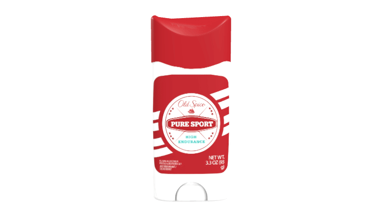
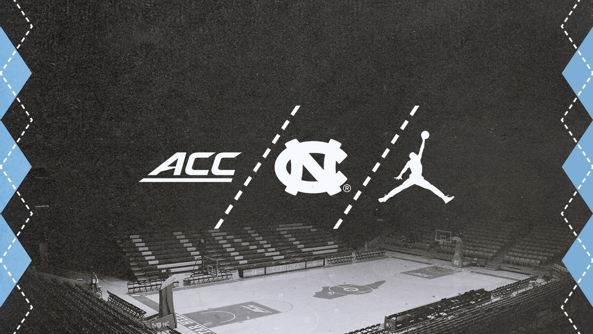
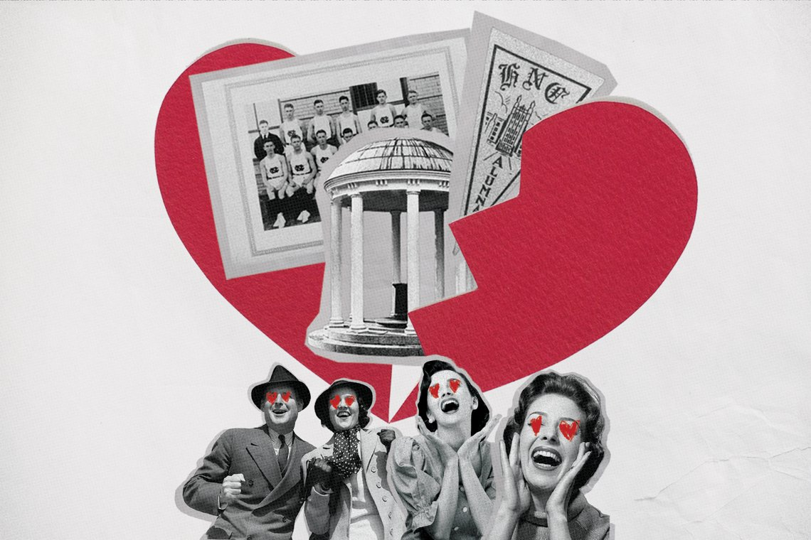
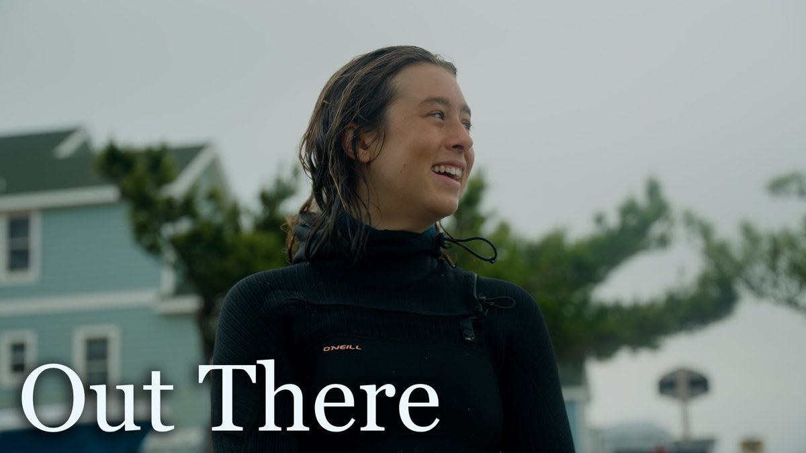
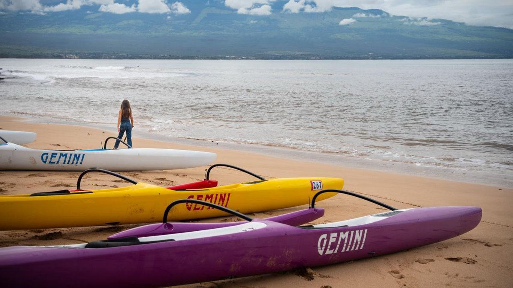

Art Direction
Art Direction
-
- Client: Old Spice “Pure Sport”
- Wanted: Art Director & Designer

-
- Client: Old Spice “Pure Sport”
- Wanted: Art Director & Designer

Design
-
- Client: UNC Women’s Basketball
- Wanted: Designer & Photographer

-
- Client: The Daily Tar Heel
- Wanted: Designer

Documentary
-
- Project: Carolina Photojournalism Workshop
- Wanted: Videographer & Editor

-
- Project: Mālama Maui
- Wanted: Videographer & Editor

You seem lost partner